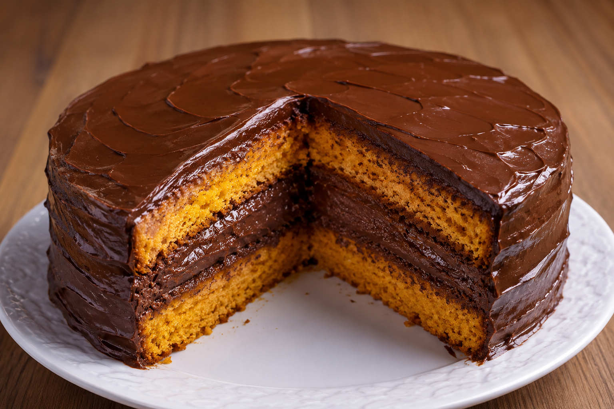

Receita de Hoje: Bolo de Cenoura com Cobertura de Chocolate Fácil e Rápido de Fazer |
|
|---|---|
|
 Imagem meramente ilustrativa |
Sabe aquela vontade de comer um doce caseiro, fofinho e cheio de sabor? Esse bolo de cenoura é a escolha perfeita! 💛 Com uma massa macia e delicadamente adocicada, preparada com cenouras frescas, ele combina perfeitamente com uma cobertura cremosa de chocolate, que escorre pelo bolo e deixa cada pedaço ainda mais irresistível. E o melhor: é uma receita rápida, fácil e prática, perfeita para preparar quando bate aquela vontade de um docinho no meio da tarde, para acompanhar um café ou até mesmo para surpreender a família sem precisar passar horas na cozinha.
|
| INGREDIENTES | MODO DE PREPARO |
para a cobertura de chocolate vamos utilizar |
Importante!Não bata a farinha direto pelo Liquidificador, fazer isso, pode desenvolver muito glúten, deixando nossa receita muito pesada. Para a Cobertura faremos da seguinte formaDica de ouro! para deixar a receita ainda mais gostosa, você pode adicionar 1 colher de sopa de creme de leite depois de desligar o fogo e misturar muito bem, isso vai deixar sua cobertura mais cremosa e brilhante. |